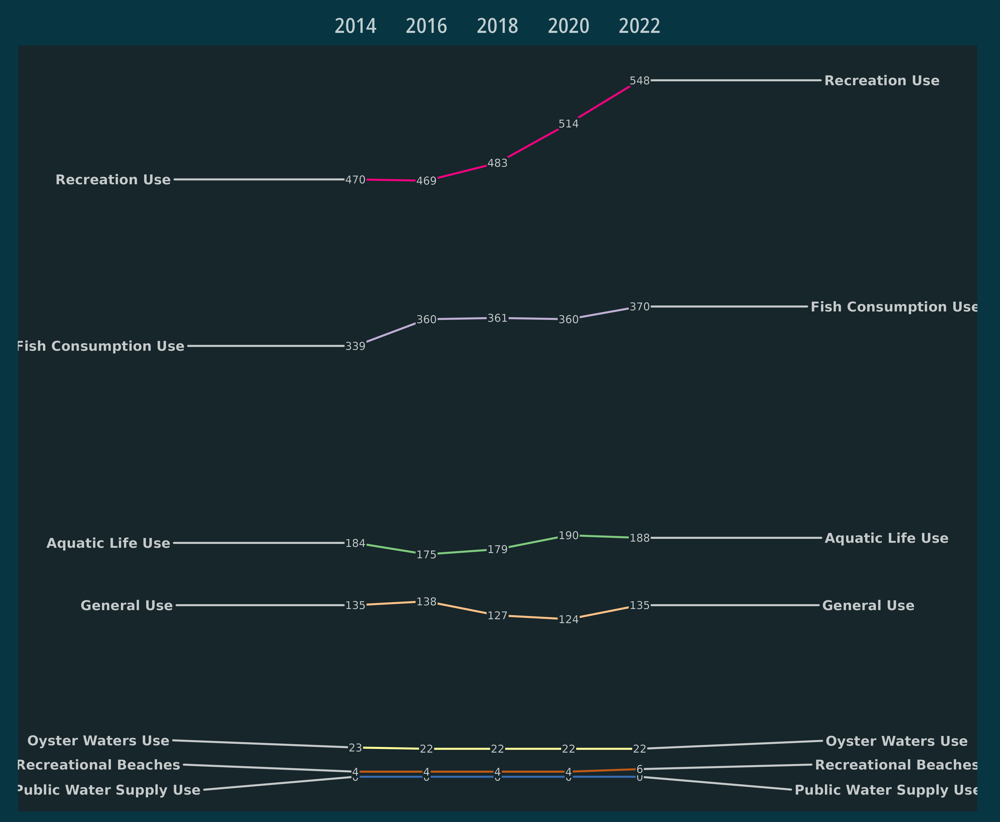
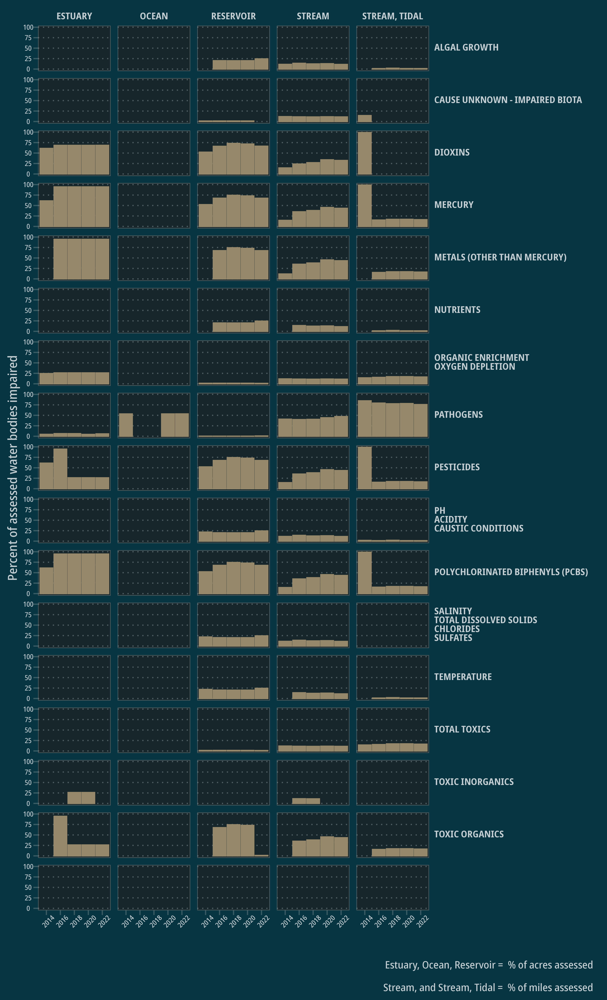

Example - Tracking Impaired Waters
Source:vignettes/articles/Example---Tracking-Impaired-Waters.Rmd
Example---Tracking-Impaired-Waters.Rmd
library(rATTAINS)
library(dplyr)
#>
#> Attaching package: 'dplyr'
#> The following objects are masked from 'package:stats':
#>
#> filter, lag
#> The following objects are masked from 'package:base':
#>
#> intersect, setdiff, setequal, union
library(ggplot2)
library(ggrepel)
library(ggtext)
library(mpsTemplates)
mpsTemplates::noto_dark_geom_defaults()Tracking impaired uses
A simple example utilizing ATTAINS data is tracking the changes in
waters assessed as “impaired” from year to year. We can access this data
using the state_summary() function that will provide
aggregated information about assessment decisions by organization
identifier. First we need to find out what organization identifier to
use:
domain_values(domain_name = "OrgStateCode") |>
filter(code == "TX")
#> # A tibble: 2 × 5
#> domain name code context context_2
#> <chr> <chr> <chr> <chr> <chr>
#> 1 OrgStateCode TX TX TCEQMAIN State
#> 2 OrgStateCode TX TX EPA EPAIt appears we can use TCEQMAIN as a identifier code if
we are interested in assessment summaries in the state of Texas. I’m
interested in the three most recent assessment cycles. Unfortunately, we
can use multiple values in the reporting_cycle argument so
we need to either loop through the calls or do some row binding. Since
it is just a few years, I will just bind the rows.
df <- state_summary(organization_id = "TCEQMAIN", reporting_cycle = "2022") |>
bind_rows(state_summary(organization_id = "TCEQMAIN", reporting_cycle = "2020")) |>
bind_rows(state_summary(organization_id = "TCEQMAIN", reporting_cycle = "2018")) |>
bind_rows(state_summary(organization_id = "TCEQMAIN", reporting_cycle = "2016")) |>
bind_rows(state_summary(organization_id = "TCEQMAIN", reporting_cycle = "2014")) Next summarize the counts of “causes” by reporting cycle and designated use:
df_uses <- df |>
filter(use_name != "DOMESTIC WATER SUPPLY - PUBLIC WATER SUPPLY") |>
mutate(reporting_cycle = as.numeric(reporting_cycle),
cause_count = as.numeric(cause_count)) |>
group_by(reporting_cycle, use_name) |>
summarise(count = sum(cause_count, na.rm = TRUE))
#> `summarise()` has grouped output by 'reporting_cycle'. You can override using
#> the `.groups` argument.Finally, plot with some ggplot and ggrepel magic:
ggplot(df_uses, aes(x = reporting_cycle, y = count, group = use_name)) +
geom_line(aes(color = use_name)) +
geom_text_repel(data = df_uses |> filter(reporting_cycle==2022),
aes(label = use_name),
size = 2.5,
hjust = "left",
fontface="bold",
direction= "y",
nudge_x = 5,
color = alpha("white", .75)) +
geom_text_repel(data = df_uses |> filter(reporting_cycle==2014),
aes(label = use_name),
size = 2.5,
hjust = "right",
fontface="bold",
direction= "y",
nudge_x = -5,
color = alpha("white", .75)) +
geom_label(aes(label = count),
size = 2,
label.padding = unit(0.05, "lines"),
label.size = 0.0,
fill = "#17262b",
color = alpha("white", .75)) +
scale_x_continuous(position = "top",
breaks = c(2014,2016,2018,2020, 2022),
expand = expansion(mult = 0.25)) +
scale_color_brewer(palette = "Accent") +
theme_mps_noto_dark() +
theme(axis.ticks = element_blank(),
axis.title.y = element_blank(),
axis.title.x = element_blank(),
axis.text.y = element_blank(),
legend.position = "none",
panel.border = element_blank(),
panel.grid.major.x = element_blank(),
panel.grid.minor.x = element_blank(),
panel.grid.major.y = element_blank(),
panel.grid.minor.y = element_blank())
Tracking parameter assessments
Instead of the number of impaired assessment units, this example examines the proportion of assessed stream miles or water body acres that are impaired due to a particular water qualiyt parameter.
df |>
group_by(water_type_code) |>
filter(use_name %in% c("Recreation Use", "General Use", "Aquatic Life Use",
"Fish Consumption Use")) |>
filter(water_type_code != "WETLANDS, FRESHWATER") |>
mutate(parameter_group = gsub("/", "<br>", parameter_group)) |>
mutate(assessed = fully_supporting + not_supporting,
percent_impaired = not_supporting/assessed * 100) |>
ggplot() +
geom_col(aes(reporting_cycle, percent_impaired)) +
facet_grid(rows = vars(parameter_group),
cols = vars(water_type_code)) +
labs(x = "", y = "Percent of assessed water bodies impaired",
caption =
"Estuary, Ocean, Reservoir = % of acres assessed\n
Stream, and Stream, Tidal = % of miles assessed") +
theme_mps_noto_dark() +
theme(axis.text.x = element_text(size = 6, angle = 45),
axis.text.y = element_text(size = 6),
strip.text.y = element_markdown(angle = 0, hjust = 0, size = 8),
strip.text.x = element_text(size = 8),
strip.background = element_blank(),
legend.position = "none")
#> Warning: Removed 46 rows containing missing values (`position_stack()`).
Notes
The most difficult part of utilizing this data is exploring what is included and reported by various states. Each state provides different amounts of data and often has unique codes or information under the same variable name. Having some state or tribal specific context is probably useful in interpreting the information included in the data. Also note that I do not have documentation about the specific meanings of the various output variables because that information is not provided by EPA.